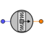

| s_out | PORTS_LIB.analog_signal | OUT | Output signal port | ||
| state_in | State | IN | Input state port |
| CosDir[MovilAxis] | REAL | { 1,0,0} | Cosines of the measurement axis | - | |
| Pos[MovilAxis] | REAL | { 0,0,0} | Accelerometer position | m | |
| bias | REAL | 0 | Bias | - | |
| gain | REAL | 1 | Gain | - |
| A[MovilAxis] | REAL | Acceleration in body axes | m/s^2 | ||
| Ac[MovilAxis] | REAL | Centripetal component of A | m/s^2 | ||
| At[MovilAxis] | REAL | Tangential component of A | m/s^2 | ||
| W[MovilAxis] | REAL | Angular velocity | rad/s | ||
| W_Pos[MovilAxis] | REAL | Cross product of W and Pos | m/s^2 | ||
| Wdot[MovilAxis] | REAL | Angular acceleration | rad/s^2 | ||
| v | REAL | Measured variable |
Document generated automatically (Date: 2019:01:23, Time: 00:19:17)